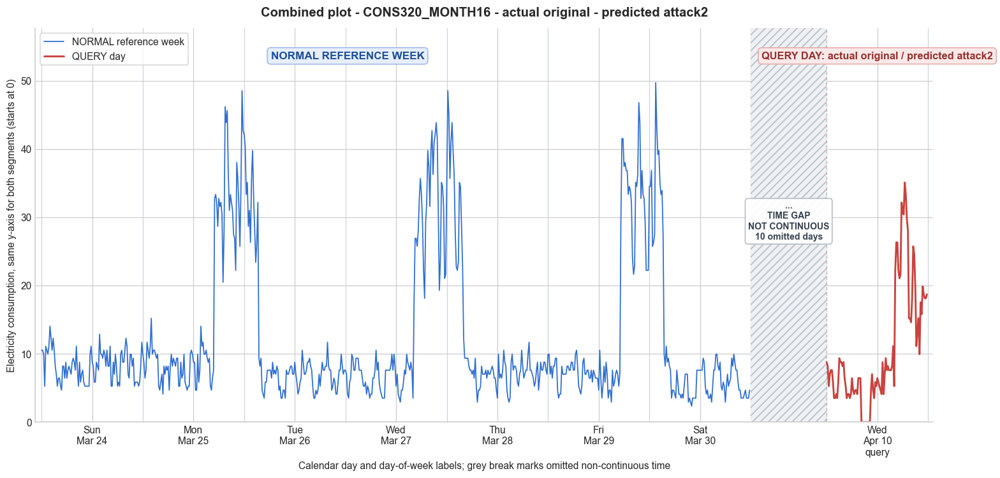

CONS320_MONTH16 · actual original · predicted attack2
- Pair
- CONS320_MONTH16
- GT
- original
- Prediction
- attack2
- Binary GT
- original
- Binary Prediction
- attacked
- Source
- E010
- Parse
- stored
- Date
- 2013-04-10
- Weekday
- Wednesday
- Latency
- 2.08 min
- Tokens
- 9593

Final output
Classification: - Manipulated Identified_Attack: - Most Likely: Attack 2 - Confidence: High - Reasoning: The query day contains a contiguous block of 9 consecutive zero readings (2.25 hours) during the morning, while the rest of the day shows normal consumption patterns consistent with the reference week. This is a textbook on‑off attack (Attack 2), where samples are replaced by zeros for a random duration. The reference week contains no zero values in any day, confirming the anomaly. Attack IEEE was considered as it can also produce zeros, but its description suggests an irregular pattern of isolated zero intervals across the whole day, whereas here the zeros appear in a single uninterrupted block, making Attack 2 a more precise match. Attack 4 (reduction over a random period) was ruled out because it typically implies scaling rather than exact zeroing, and the observed zeros are absolute, not reduced values. Attack_Behavior_Explanation: - How consumption values are manipulated: A continuous segment of 9 readings (from approximately 08:15 to 10:30) has been replaced with zeros, while the remaining intervals reflect the customer’s actual electricity usage. This creates an artificial gap in the consumption trace. - Impact on magnitude and trend: The attack lowers the daily mean (10.56 vs. 14.60 in the reference Wednesday) and distorts the trend, introducing a sharp drop to zero and a subsequent recovery that does not exist in normal behavior. The daily load shape is disrupted but preserves realistic peaks and valleys outside the zero block. - Possible technical causes: Full meter bypass (disconnecting the meter for a short period), false data injection (sending zero readings), or reverse current (causing the meter to register no consumption). Such methods can be employed intermittently to avoid detection while still reducing the reported energy usage.
Prompt
You are a domain expert in smart grid security and electricity theft analysis, with deep knowledge of non-technical loss (NTL) attack patterns in smart meters. You are given: 1. A plot of one week of original (normal) energy consumption for a smart meter, provided as context for the customer's typical consumption behavior. 2. A plot of one day of energy consumption for the same smart meter, which may or may not be manipulated. Below are common attack types, each defined by how consumption values are altered, their impact on magnitude and trend, and their possible technical causes. Attack 0: Generated by replacing all electricity consumption samples with zero values for the entire observation duration. Simulates a scenario where no energy usage is reported at all. May be caused by a total meter bypass or severe meter malfunction. Completely eliminates both the trend and magnitude of the consumption profile. Attack 1: Multiplies the actual energy consumption by a constant random value between (0,1). The lower the factor, the higher the severity. Can be triggered by meter bypass, magnetic interference, reverse current, and false data injection. The consumption trend remains the same but the magnitude is uniformly reduced. Attack 2: Generated by replacing consumption samples with zeros for a random duration. Also known as an on-off attack. Can be caused by full meter bypass, false data injection, and reverse current. Changes both the trend and amplitude. Attack 3: The actual consumption is multiplied by different random factors between 0 and 1, with a unique factor per sample. Similar to Attack 1 but the scaling factor varies per reading. Caused by meter bypass, magnetic interference, and reverse current. Changes both the trend and amplitude. Attack 4: Simulates energy theft over a randomly selected period within the observation window. All measurements in that period are reduced. Caused by meter bypass, magnetic interference, reverse current, and false data injection. Changes both the trend and amplitude. Attack 5: Each sample is replaced by a false value obtained by multiplying the average normal consumption by a random variable between 0 and 1, with a different variable per sample. Caused by false data injection. Produces a completely different pattern from the original consumption profile, changing both trend and magnitude. Attack 6: A random cut-off point is selected and all consumption values above it are replaced by that cut-off value. The attacker avoids exceeding a predefined maximum limit. Mainly caused by false data injection. Changes both the trend and amplitude. Attack 7: A random cut-off point is subtracted from each sample; if the result is negative, zero is reported. Similar to Attack 6 but replaces exceeding values with zero instead of the cut-off point. May be caused by false data injection or total meter bypass. Does not change the trend but reduces overall consumption. Attack 9: All samples are replaced by the average daily energy consumption, resulting in a flat constant profile. Easily detectable because constant consumption does not reflect normal customer behavior. Caused by false data injection. Eliminates all trends. Attack 10: Reverses the consumption pattern without reducing the total amount. Applicable when the electricity company uses time-varying pricing, allowing the attacker to shift high consumption to off-peak periods. Caused by false data injection. Changes the trend without decreasing total consumption. Attack 12: The attacker replaces their consumption pattern with that of a lower-consuming user. The legitimate user unknowingly pays the adversary's electricity bill. Caused by false data injection. Attack IEEE: For each 15-minute interval across the entire day, the consumer either reports the actual electricity consumption or substitutes it with zero. The result is a profile where some intervals reflect real consumption while others are zeroed out, creating an irregular pattern across the full day. May be caused by false data injection. Changes both the trend and amplitude. Given the two plots, determine: 1. Whether the day is attacked or original - compare the flagged day against the normal week and assess whether the consumption pattern is consistent with normal behavior or shows signs of manipulation. If the day is consistent with the customer's typical consumption behavior, classify it as original and provide no further analysis. If manipulation is detected, proceed to point 2. 2. Which attack type this most likely is - identify the single most probable attack and justify your choice based on how the flagged day deviates from the normal week. 3. The behavior of the identified attack - explain how the consumption values are manipulated, their impact on magnitude and trend, and the possible technical causes behind this type of attack. Output Format: Classification: - Original | Manipulated Identified Attack: (fill only if manipulated) - Most Likely: Attack X - Confidence: High | Medium | Low - Reasoning: Why it matches Attack X and why Attack Y and Attack Z were ruled out (list top 2 alternatives considered) Attack_Behavior_Explanation: (fill only if manipulated) - How consumption values are manipulated relative to the normal week - Impact on magnitude and trend - Possible technical causes
Reasoning content
We are given a reference week of 7 days (Day 0 to Day 6) and a query day (DAY_ID=3). The reference week's Day 3 is from the same customer, and the query day is also DAY_ID=3 but from a different month (April vs March). The metadata says: CONS_NO=320, MONTH_ID=16, WEEK_ID=2, DAY_ID=3, Season=Spring, Weekday=Wednesday, Date=2013-04-10. The reference week days are in March (cal_month=3), and the query day is in April (cal_month=4). The query day's dow=2 (Wednesday) matches the reference day 3's dow=2, but the dom=17 vs dom=3. So it's a different Wednesday. We need to determine if the query day is attacked or original. The query day statistics: min=0.00, max=35.11, std=8.82, mean=10.56. Compare to the reference week Day 3 (Wednesday): min=2.93, max=43.89, std=12.46, mean=14.60. The reference week Day 3 has consumption from early morning low values (3.51, 2.93) to high peaks in the afternoon/evening (43.89). The query day has a min of 0.00, which is suspicious because normal days in the reference week never have zero values; the lowest in reference week is 2.34 on Day 6. But it's possible a normal day could have zero? Unlikely for a residential smart meter unless there's a power outage, but the query day has a block of zeros (8 consecutive zeros from index 33 to 40 in the 96 readings? Wait, let's look at the query day: after 6.44, 6.44, 6.44, then 0.00 repeated 8 times? Actually the query day sequence: ...6.44, 6.44, 0.00, 0.00, 0.00, 0.00, 0.00, 0.00, 0.00, 0.00, 4.68... So from index 33 to 40? Let's count: The query day data is 96 values. I'll count positions: first value: 8.78, 8.19, 5.27, 7.02, 7.61, 7.61, 5.85, 3.51, 3.51, 4.10, 3.51, 5.85, 9.36, 8.78, 8.78, 8.19, 8.78, 6.44, 5.27, 3.51, 4.10, 4.10, 3.51, 4.10, 6.44, 4.68, 4.10, 4.68, 4.68, 4.10, 6.44, 6.44, 6.44, 0.00, 0.00, 0.00, 0.00, 0.00, 0.00, 0.00, 0.00, 0.00, 4.68, 7.02, ... So there are 9 zeros? Actually: after 6.44 (the third 6.44), then 0.00 appears. Count zeros: 0.00, 0.00, 0.00, 0.00, 0.00, 0.00, 0.00, 0.00, 0.00? That's 9 zeros? Let's count from "0.00," to "0.00,": there are nine zeros? The text: "6.44, 0.00, 0.00, 0.00, 0.00, 0.00, 0.00, 0.00, 0.00, 0.00, 4.68" — that's 9 zeros. So a block of 9 consecutive zero readings. This is highly abnormal for a normal day. In the reference week, none of the days have any zero values. Day 0 min 4.68, Day 1 min 4.10, Day 2 min 3.51, Day 3 min 2.93, Day 4 min 2.93, Day 5 min 2.93, Day 6 min 2.34. So a min of 0.00 is a clear deviation. The presence of zeros for a period indicates a possible on-off attack (Attack 2) or Attack IEEE (where some intervals are zeroed). Also Attack 4 could cause zeros if reduction is to zero? But Attack 4 reduces measurements in a period, but not necessarily to zero; it could reduce by a factor, so values wouldn't become exactly zero unless the original was zero. Attack IEEE: "For each 15-minute interval across the entire day, the consumer either reports the actual electricity consumption or substitutes it with zero. The result is a profile where some intervals reflect real consumption while others are zeroed out, creating an irregular pattern across the full day." That's exactly what we see: a block of zeros, then normal consumption resumes. Attack 2: "Generated by replacing consumption samples with zeros for a random duration. Also known as an on-off attack." That also matches. Attack 4: "Simulates energy theft over a randomly selected period within the observation window. All measurements in that period are reduced." That could produce zeros if the reduction is total (e.g., bypass), but typically reduced means multiplied by a factor, not set to zero. But Attack 4 description says "All measurements in that period are reduced." It doesn't explicitly say they become zero, but it could be via bypass. However, Attack 2 specifically says "replacing consumption samples with zeros for a random duration", which is exactly what we see: a contiguous block of zeros. Attack IEEE says "for each 15-minute interval across the entire day, the consumer either reports the actual electricity consumption or substitutes it with zero." That could also produce a contiguous block, but Attack IEEE might produce isolated zeros scattered throughout the day. Here we have a single contiguous block of zeros lasting about 2.25 hours (9*15 min = 2.25 hours). Both Attack 2 and Attack IEEE are plausible. Attack 5 generates false random values, not zeros. Attack 6 and 7 involve cutoffs; Attack 7 replaces exceeding values with zero, but that would produce zeros only for high values, not a block. Attack 0 sets all to zero, but not the case here. Attack 1 multiplies by constant factor, no zeros. Attack 3 multiplies by per-sample factors, no zeros unless factor is exactly zero, unlikely. Attack 9 constant average, Attack 10 reversal, Attack 12 replacement with other user's pattern. So the most likely are Attack 2 and Attack IEEE. Let's examine the pattern more closely. The query day has a block of zeros starting around index 33 (if we index from 0, maybe around 8:15am? Let's map: 96 intervals per day, start at 00:00. Interval 0 = 00:00-00:15, interval 1 = 00:15-00:30, etc. The block of zeros starts after the second 6.44. The readings before zeros: ... 6.44, 6.44, 6.44, then 0.00... So the last nonzero before zeros is the third 6.44. That third 6.44 could be around 08:00? Let's count intervals: I'll list the first few: 1: 8.78 (00:00-00:15), 2: 8.19, 3: 5.27, 4: 7.02, 5: 7.61, 6: 7.61, 7: 5.85, 8: 3.51, 9: 3.51, 10: 4.10, 11: 3.51, 12: 5.85, 13: 9.36, 14: 8.78, 15: 8.78, 16: 8.19, 17: 8.78, 18: 6.44, 19: 5.27, 20: 3.51, 21: 4.10, 22: 4.10, 23: 3.51, 24: 4.10, 25: 6.44, 26: 4.68, 27: 4.10, 28: 4.68, 29: 4.68, 30: 4.10, 31: 6.44, 32: 6.44, 33: 6.44, then zeros from 34 to 42? Let's count: after the third 6.44 (which is the 33rd? The text: "...6.44, 6.44, 6.44, 0.00,..." So likely the zeros are intervals 34-42 (9 zeros). Then next is 4.68 at interval 43. So the zero block spans roughly 8:15-10:30am (if interval 34 = 08:15-08:30, then interval 42 = 10:15-10:30). That is a morning period. The rest of the day shows a peak in the afternoon/evening with values up to 35.11, which is similar to the reference week's peaks (they often have peaks around 30-48). The reference day 3 had a morning with low values (e.g., 7.61, 7.02, 4.10, 3.51, 5.85, etc.) and then a huge increase later. But the query day morning had zero during a period where reference day had low consumption (but not zero). Reference day 3 at around 8:15-10:30: we'd need to map intervals. Reference day 3 data: start at 00:00: first value 7.61, ... It's hard to align exactly without full mapping, but around interval 30-40, reference day 3 had values like: looking at reference day 3 sequence: after the first few, it's 7.61, 7.61, 7.61, 8.19, 9.95, 7.61, 9.95, 8.19, 5.27, 7.02, 4.10, 3.51, 2.93, 4.68, 4.68, 5.85, 7.61, 7.02, ... So no zeros there. So the zero block is an anomaly. Now, which attack does this match? Attack 2: replacing with zeros for a random duration. Attack IEEE: For each 15-minute interval, either report actual or zero. Both could produce a contiguous block. But Attack IEEE might imply the attacker chooses per interval arbitrarily, which could lead to scattered zeros, but a contiguous block is a special case. Attack 2 explicitly says "for a random duration", i.e., a continuous period of zeros. That fits better: a single contiguous block of zeros. Attack IEEE could also produce that if the attacker chooses to zero out a contiguous block, but Attack 2 is specifically the "on-off attack" where a duration is switched off entirely. Given the description, Attack 2 seems more targeted: "replacing consumption samples with zeros for a random duration." So I'd lean towards Attack 2. But we should consider alternatives. Attack 4 reduces measurements in a period; if the reduction is total bypass, it could yield zeros. But the wording "reduced" suggests multiplication by a factor less than 1, not necessarily zero. However, it says "Simulates energy theft over a randomly selected period within the observation window. All measurements in that period are reduced." It doesn't say they become zero, but could be reduced to zero if the factor is 0. But Attack 2 is explicit about zeros. Attack IEEE explicitly mentions substituting with zero, so zeros are definitely part of it. Attack IEEE also says "for each 15-minute interval across the entire day, the consumer either reports the actual electricity consumption or substitutes it with zero." That could produce any pattern of zeros, including blocks. But Attack 2 is simpler: a single block. Given the data, we have exactly one contiguous block of zeros, no other zeros elsewhere. That's a clean on-off pattern. Attack IEEE might be expected to have more scattered zeros, but it's not required. I'll compare Attack 2 and Attack IEEE. Attack IEEE is listed as "Attack IEEE" in the list, but the list includes Attack 0-12, then Attack IEEE. So Attack 2 is a standard attack type. The description of Attack 2: "Generated by replacing consumption samples with zeros for a random duration. Also known as an on-off attack. Can be caused by full meter bypass, false data injection, and reverse current. Changes both the trend and amplitude." That fits perfectly: a random duration of zeros. Attack IEEE: "For each 15-minute interval across the entire day, the consumer either reports the actual electricity consumption or substitutes it with zero. The result is a profile where some intervals reflect real consumption while others are zeroed out, creating an irregular pattern across the full day. May be caused by false data injection. Changes both the trend and amplitude." It also fits. Which one is more likely? Both are plausible. However, the key difference is that Attack 2 is a single contiguous block of zeros (random duration), while Attack IEEE could be any arbitrary pattern of zero and non-zero intervals. Since we observe a single contiguous block, Attack 2 is a more precise description. Attack IEEE could also produce a single block if the attacker chooses to zero out consecutive intervals, but the description emphasizes "some intervals reflect real consumption while others are zeroed out, creating an irregular pattern" which might imply a non-contiguous pattern, but not necessarily. Given the typical "on-off attack" is a common NTL pattern, I'll go with Attack 2. I'll also consider Attack 4, but that reduces, not necessarily to zero. The presence of exact zeros is a strong indicator of a bypass or false data injection setting to zero, which Attack 2 explicitly covers. Attack IEEE is also a candidate, but I'll select Attack 2 as Most Likely, with Attack IEEE as an alternative. Now check the query day's other characteristics. The mean is 10.56, which is lower than reference day 3 mean 14.60, but not drastically. The max is 35.11 vs 43.89, slightly lower but within range of other days. The std is 8.82 vs 12.46, lower variability. The block of zeros reduces overall consumption and alters trend. The pattern after zeros resumes with values similar to other days. So it's manipulated. Now, classification: Manipulated. Identified Attack: Most Likely Attack 2. Confidence: High? Let's see if any other attack could produce zeros. Attack 7: "A random cut-off point is subtracted from each sample; if the result is negative, zero is reported." That could produce zeros for samples that exceed the cut-off, but that would scatter zeros wherever consumption is above the cut-off. Here we have a solid block of zeros, not scattered, and values before and after are non-zero, many of which are low (e.g., 4.68, 3.51) so they might also be below cut-off? If cut-off were, say, 4, then samples above 4 would become zero, but we see many samples above 4 before and after, like 6.44, 8.78, etc. So Attack 7 would have zeroed those as well, but they are non-zero. So not Attack 7. Attack 6 would replace exceeding values with the cut-off, not zero. So not that. Attack 0 would zero everything, not just a block. Attack 1,3,5,9,10,12 don't produce zeros. So only Attack 2 and Attack IEEE are candidates. Confidence: High, because the presence of a contiguous zero block is distinctive. Now, reasoning: Rule out Attack IEEE (could produce block but less specific; Attack 2 is exact on-off). Also rule out Attack 4 (reduction, not zeroing). Explain. Now, Attack_Behavior_Explanation: How consumption values are manipulated: A contiguous block of 9 consecutive 15-minute readings (2.25 hours) has been replaced with zeros, likely during a period of moderate morning activity. The rest of the day's consumption appears normal, with values matching typical patterns. Impact on magnitude and trend: The magnitude is reduced overall (mean from ~14.60 to 10.56), and the trend is altered by the sudden zero block, creating an unnatural drop and recovery. Possible technical causes: full meter bypass (disconnecting the meter for a period), false data injection (sending zero readings for a duration), or reverse current (for that period). So Attack 2 matches. Let's produce the output.